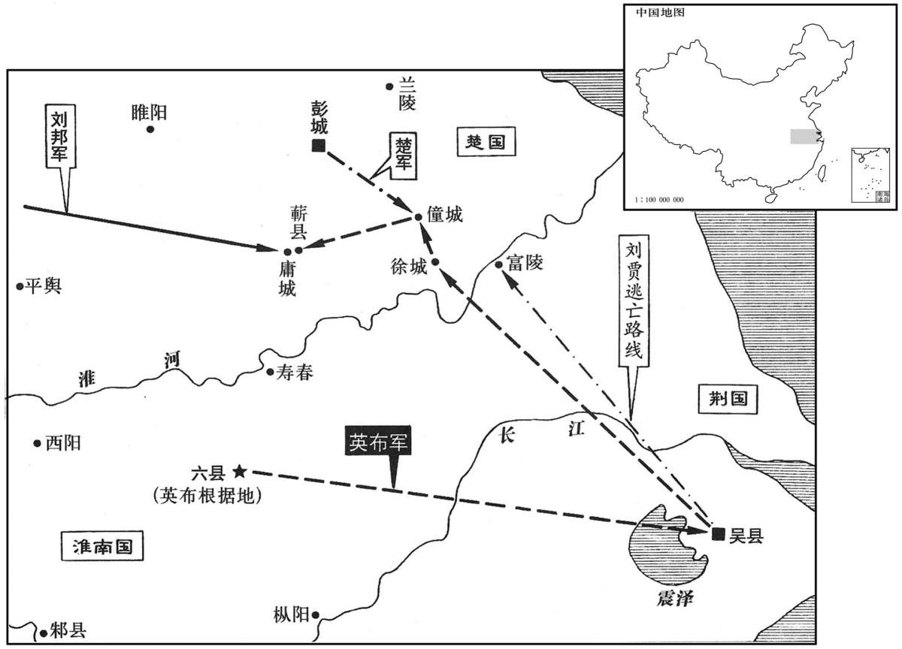

公元前196年资治通鉴：本年记事、原文与白话对照
按原书编年位置阅读；追叙和史论不等于本年发生的事件。白话采用所据译本，缺译不以生成译文补齐。
卷12 · 本年记事
公元前196年 · 汉太祖高皇帝十一年
十一年〔（乙巳、前一九六）〕
本年事件索引（现代整理）

本年形势与背景参考图
冬，上在邯郸。陈豨将侯敞将万余人游行，王黄将骑千余军曲逆，张春将卒万余人渡河攻聊城；〔班志，聊城县属东郡。括地志：聊城故城，在博州聊城县西二十里，春秋时齐之西界。聊，摄也。战国时亦为齐地。〕汉将军郭蒙与齐将击，大破之。太尉周勃道太原入定代地，至马邑，不下，攻残之。〔残，谓多所杀戮。〕赵利守东垣，帝攻拔之，更命曰真定。〔更，工衡翻。〕帝购王黄、曼丘臣以千金，其麾下皆生致之。于是陈豨军遂败。
冬季，高帝在邯郸城。陈的部将侯敞率一万余人游动袭击，王黄率骑兵一千余人屯军曲逆，张春率一万余士卒渡过黄河进攻聊城；汉朝将军郭蒙与齐国将军迎击，大破陈军。太尉周勃取道太原去平定代地，兵抵马邑，久攻不下，攻下后便大行杀戮。赵利守东垣城，高帝亲自率军攻克，将地名改为真定。高帝又悬赏千金捉拿王黄、曼丘臣，结果其部下都将他们活捉送来，于是陈军队溃败。
淮阴侯信称病，不从击豨，阴使人至豨所，与通谋。信谋与家臣夜诈诏赦诸官徒、奴，〔有罪而居作者为徒；有罪而没入官者为奴。〕欲发以袭吕后、太子；部署已定，待豨报。其舍人得罪于信，信囚，欲杀之。春，正月，舍人弟上变，告信欲反状于吕后。〔按班书功臣表，告信反者，舍人乐说也，封慎阳侯。〕吕后欲召，恐其傥不就；〔傥，或然之辞。〕乃与萧相国谋，诈令人从上所来，言豨已得，死，列侯、群臣皆贺。相国绐信曰：“虽疾，强入贺。”〔强，其两翻。〕信入，吕后使武士缚信，斩之长乐钟室。〔师古曰：悬钟之室。〕信方斩，曰：“吾悔不用蒯彻之计，〔不用蒯彻，见十卷四年。〕乃为儿女子所诈，岂非天哉！”遂夷信三族。
淮阴侯韩信假称有病，不随从高帝去攻击陈，暗中却派人到陈那里，与他勾结谋划。韩信想在夜间与家臣用伪诏书赦免官府的有罪工匠及奴隶，打算发动他们去袭击吕后、太子。已经部署完毕，只等陈的消息。韩信有个门下舍人曾因得罪韩信，被囚禁起来，准备处死。春季，正月，舍人的弟弟上书举报事变，将韩信打算谋反的情况告诉吕后。吕后想把韩信召来，又担心他可能不服从，便与相国萧何商议，假装让人从高帝处来，说陈已经被擒，处死。列侯及群臣闻讯都到朝中祝贺。萧何又欺骗韩信说：“你虽然病了，也应当强挺着来道贺。”韩信来到朝廷，吕后便派武士将他捆绑起来，在长乐宫钟室里斩首。韩信在斩首之前，叹息说：“我真后悔没用蒯彻的计策，竟上了小孩子、妇人的当，这难道不是天意吗！”吕后随后下令将韩信三族都连坐杀死。
本段人物：萧何
史家评论 · 原文及其白话
臣光曰：世或以韩信〔【章：甲十五行本“信”下有“为”字；乙十一行木同；孔本同。】〕首建大策，与高祖起汉中，定三秦，遂分兵以北，禽魏，取代，仆赵，胁燕，东击齐而有之，南灭楚垓下，汉之所以得天下者，大抵皆信之功也。观其距蒯彻之说，迎高祖于陈，〔见卷六年。〕岂有反心哉！良由失职怏怏，遂陷悖逆。夫以卢绾里闬旧恩，犹南面王燕，信乃以列侯奉请；〔闬，侯旰翻。王，于况翻。朝，直遥翻。请，才性翻，又如字。〕岂非高祖亦有负于信哉？臣以为高祖用诈谋禽信于陈，言负则有之；虽然，信亦有以取之也。始，汉与楚相距荥阳，灭齐，不还报而自王；〔见十卷四年。〕其后汉追楚至固陵，与信期共攻楚而信不至；〔见十卷五年。〕当是之时，高祖固有取信之心矣，顾力不能耳。及天下已定，〔【章：甲十五行本“定”；下有“则”字；乙十一行本同；孔本同。】〕信复何恃哉！〔复，扶又翻。〕夫乘时以徼利者，市井之志也；〔徼，一遥翻。〕酬功而报德者，士君子之心也。〔酬，时流翻。〕信以市井之志利其身，而以士君子之心望于人，不亦难哉！是故太史公论之曰：“假令韩信学道谦让，不伐己功，不矜其能，则庶几哉！〔几，居衣翻。〕于汉家勋，可以比周、召、太公之徒，后世血食矣！不务出此，而天下已集，乃谋畔逆；夷灭宗族，不亦宜乎！”
臣司马光曰：世人有的认为，韩信为汉高祖首先奠定开业大计，与他一同在汉中起事，平定三秦后，又分兵向北，擒获魏国，夺取代国，扑灭赵国，胁迫燕国，再向东攻击占领齐国，复向南在垓下消灭楚国，汉朝之所以能得到天下，大致都归功于韩信。再看他拒绝蒯彻的建议，在陈地迎接高祖，哪里有反叛之心呢！实在是因为失去诸侯王的权位后怏怏不快，才陷于大逆不道。卢绾仅仅有高祖里巷旧邻的交情，就封为燕王，而韩信却以侯爵身分奉朝请；高祖难道不也有亏待韩信的地方吗？我认为：汉高祖用诈骗手段在陈地抓获韩信，说他亏待是有的；不过，韩信也有咎由自取之处。当初，汉王与楚王在荥阳相持，韩信灭了齐国，不来奏报汉王却自立为王；其后，汉王追击楚王到固陵，与韩信约定共同进攻楚王，而韩信按兵不动；当时，高祖本已有诛杀韩信的念头了，只是力量还做不到罢了。待到天下已经平定，韩信还有什么可倚仗的呢！抓住机会去谋取利益，是市井小人的志向；建立大功以报答恩德，是有志操崐学问的君子的胸怀。韩信用市井小人的志向为自己谋取利益，而要求他人用君子的胸怀回报，不是太难了吗！所以，太史公司马迁评论说：“假如让韩信学习君臣之道，谦虚礼让，不夸耀自己的功劳，不矜持自己的才能，情况大概就不同了！他对汉家的功勋，可以与周公、召公、太公吕尚等人相比，后代也就可以享有祭祀了！他不去这样做，反而在天下已定之时，图谋叛逆，被斩灭宗族，不是理所当然的吗！”
将军柴武斩韩王信于参合。〔姓谱：柴姓，高柴之后。班志，参合县属代郡。括地志：参合故城在朔州定襄县北。〕
将军柴武在参合将韩王信斩首。
上还洛阳，闻淮阴侯之死，且喜且怜之；〔喜者，喜除其逼；怜者，怜其功大。〕问吕后曰：“信死亦何言？”吕后曰：“信言恨不用蒯彻计。”上曰：“是齐辩士蒯彻也。”乃诏齐捕蒯彻。蒯彻至，上曰：“若教淮阴侯反乎？”对曰：“然，臣固教之。竖子不用臣之策，故令自夷于此；如用臣之计陛下安得而夷之乎！”上怒曰：“烹之！”彻曰：“嗟乎！冤哉烹也！”上曰：“若教韩信反，何冤？”对曰：“秦失其鹿，天下共逐之，高材疾足者先得焉。跖之狗吠尧；尧非不仁，狗固吠非其主。当是时，臣唯独知韩信，非知陛下也。且天下锐精持锋〔锐精，言磨淬精铁而锐之也。〕欲为陛下所为者甚众，顾力不能耳，〔师古曰：顾，念也。余谓顾，反视也，反己而自视其力有所不能也。〕又可尽烹之邪？”上曰：“置之。”〔置，犹舍也，又赦也。〕
高帝回到洛阳，知道淮阴侯韩信被杀，又是欣喜又是怜惜。他问吕后：“韩信临死有什么话？”吕后说：“韩信说后悔没用蒯彻的计谋。”高帝悟道：“是齐国的能辩之士蒯彻呀！”便诏令齐国逮捕蒯彻。蒯彻被押来后，高帝问：“你教韩信造反吗？”回答说：“是的，我确实教过。那家伙不听我的计策，所以才自取灭亡，落到这个地步；如果用我的计策，陛下怎么能够杀了他呢！”高帝勃然大怒，下令：“煮死他！”蒯彻大叫：“哎呀！煮我实在冤枉！”高帝问“你教韩信造反，还有何冤枉？”蒯彻说：“秦朝失去江山，天下人都群起争夺，有才能、动作快的人能先得到。古时跖的狗对尧吠叫，并不是尧不仁，而是狗本来就要对不是它主人的人吠叫。当时，我作为臣子只知道有韩信，不知道有陛下啊！何况，天下磨刀霍霍，想做陛下这般大业的人很多，只是力量达不到罢了，您又能都煮死吗？”高帝听罢说：“放了他。”
立子恒为代王，都晋阳。〔晋阳，汉为太原郡治所。如淳曰：文纪言都中都。又文帝过太原，复晋阳、中都二岁，似迁都于中都也。恒，户登翻。〕
高帝立儿子刘恒为代王，以晋阳为都城。
大赦天下。
高帝下令大赦天下。
上之击陈豨也，征兵于梁；梁王称病，使将将兵诣邯郸。上怒，使人让之、梁王恐，欲自往谢。其将扈辄曰：“王始不往，见让而往，往则为禽矣；不如遂发兵反。”梁王不听。梁太仆得罪，亡走汉，告梁王与扈辄谋反。于是上使使掩梁王，梁王不觉，遂囚之洛阳。有司治：“反形已具，〔臣瓒曰：扈辄劝越反而越不诛，是反形已具也。〕请论如法。”上赦以为庶人，传处蜀青衣。〔青衣道属蜀郡。臣瓒曰：今汉嘉是也。章怀太子贤曰：青衣道，在大江、青衣二水之会，今嘉州龙游县也。传，张恋翻。处，昌吕翻。〕西至郑，逢吕后从长安来。彭王为吕后泣涕，自言无罪，愿处故昌邑。〔二世二年，彭越起于昌邑。为，于伪翻。〕吕后许诺，与俱东。至洛阳，吕后白上曰：“彭王壮士，今徙之蜀，此自遗患；不如遂诛之。妾谨与俱来。”于是吕后乃令其舍人告彭越复谋反。〔复，扶又翻。〕廷尉王恬开秦请族之，上可其奏。三月，夷越三族。〔此以汉书本纪为据；史记高祖纪作“夏，夷彭越三族”，年表书“越反，诛”，又在十年夏诛彭越，盖以卢绾言为据。〕枭越首洛阳，下诏：“有收视者，辄捕之。”
高帝进攻陈时，向梁王彭越征兵，彭越称病，只派将军率兵赴邯郸。高帝大怒，令人前去斥责。彭越恐惧，想亲身入朝谢罪。部将扈辄说：“您当初不去，受到斥责后才去，去就会被擒，不如就势发兵反了吧。”彭越不听劝告。他的太仆因获罪逃往长安，控告梁王彭越与扈辄谋反。于是高帝派人突袭彭越，彭越事先没有发觉，便被俘囚禁到洛阳。有关部门审讯结果是：“已有谋反迹象，应按法律处死。”高帝赦免他为平民，押送到蜀郡青衣居住。彭越向西到了郑地，遇到吕后从长安来。彭越向吕后哭泣，说自己无罪，希望能到故地昌邑居住。吕后口中应允，与他一起东行。到了洛阳，吕后对高帝说：“彭越是个壮士，如今把他流放到蜀郡，这是自留后患，不如就此杀了他。我已与他同来。”吕后又指使彭越门下舍人控告彭越再行谋反。廷尉王恬开奏请将彭越灭三族，高帝予以批准。三月，彭越三族都被斩首。还割下彭越的首级在洛阳示众，并颁布诏令：“有来收敛尸体者，一律逮捕。”
梁大夫栾布使于齐，〔姓谱：栾，晋卿栾氏之后。〕还，奏事越头下，祠而哭之。吏捕以闻。上召布，骂，欲烹之。方提趋汤，〔提，挈也；挈而趋鼎，欲投之于汤。趋，七喻翻。〕布顾曰：“愿一言而死。”上曰：“何言？”布曰：“方上之困于彭城，败荥阳、成皋间，项王所以遂不能西者，徒以彭王居梁地，与汉合从苦楚也。〔从，子容翻。〕当是之时，王一顾，与楚则汉破，与汉则楚破。且垓下之会，微彭王，项氏不亡。天下已定，彭王剖符受封，亦欲传之万世。今陛下一征兵于梁，彭王病不行，而陛下疑以为反；反形未具，以苛小案诛灭之。臣恐功臣人人自危也。今彭王已死，臣生不如死，请就烹！”于是上乃释布罪，拜为都尉。
梁王彭越的大夫栾布出使齐国，回来后，在彭越的头颅下奏报，祭祀后大哭一场。官吏将他逮捕，报告高帝。高帝召来栾布，痛骂一番，想煮死他。两旁的人正提起他要投入滚水中，栾布回头说：“请让我说句话再死。”高帝便问：“还有什么话？”栾布说：“当年皇上受困于彭城，战败于荥阳、成皋之间，而项羽却不能西进，只是因为彭越守住梁地，与汉联合而使楚为难。当时，只要彭越一有倾向，与项羽联合则汉失败，与汉联合则楚失败。而且垓下会战，没有彭越，项羽就不会灭亡。如今天下已经平定，彭越接受符节，被封为王，也想传给子孙后代。而如今陛下向梁国征一次兵，彭越因病不能前来，陛下就疑心以为造反；未见到反叛迹象，便以苛细小事诛杀了他。我担心功臣会人人自危。现在彭越已经死了，我活着也不如死，请煮死我吧！”高帝认为有理，便赦免了栾布的罪，封他为都尉。
丙午，立皇子恢为梁王；〔考异曰：汉书诸侯王表作“三月丙午”。按刘羲叟长历：三月丙辰朔，无丙午；今从史记年表。今按史记年表作“二月丙午”，但通鉴先书“三月夷彭越三族”，方于此书“立子恢为梁王”，则又是三月丙午。〕丙寅，立皇子友为淮阳王。罢东郡，颇益梁；罢颖川郡，颇益淮阳。
丙午（疑误），高帝立皇子刘恢为梁王，丙寅（十一日），立皇子刘友为淮阳王。废除东郡，较大地扩充了梁国；废除颍川郡，较大地扩充了淮阳国。
夏，四月，行自洛阳至。
夏季，四月，高帝一行从洛阳回长安。
五月，诏立秦南海尉赵佗为南粤王，〔晋志：秦使任嚣、赵佗攻粤，略取陆梁地，遂定南粤，以为桂林、南海、象三郡，非三十六郡之限；乃置南海尉以典之，所谓“东南一尉”也。余谓始皇二十六，分天下为三十六郡，郡置守、尉、监。三十三年，取南粤，置南海、桂林、象郡；此南海尉止典南海一郡兵，犹三十六郡之尉也，安得兼典桂林、象郡！任嚣既死，秦已破灭，赵佗始击并桂林、象郡，以此知非兼典也。佗，徒河翻。〕使陆贾即授玺绶，〔姓谱：陆，古天子陆终之后。〕与剖符通使，使和集百越，无为南边患害。
五月，高帝下诏立原秦朝南海尉赵佗为南粤王，派陆贾前往授予印信绶带，颁发符节，互通使者，让他团结安抚百越，不要成为南方边境的祸害。
初，秦二世时，南海尉任嚣病且死，〔任，音壬。嚣，音敖。〕召龙川令赵佗，〔班志：龙川县属南海郡。裴氏广州记龙川本博罗县之东乡，有龙穿地而出，即穴流泉，因以为号。师古曰：今循州。〕语曰：〔语，牛倨翻。〕“秦为无道，天下苦之。闻陈胜等作乱，天下未知所安。南海僻远，吾恐盗兵侵地至此，欲兴兵绝新道自备，〔苏林曰：新道，秦所新通越道。〕待诸侯变；会病甚。且番禺负山险，阻南海，〔班志．番禺县属南海郡，尉佗所都。今为广州治所。番，音潘。禺，音愚，又鱼容翻。〕东西数千里，颇有中国人相辅；此亦一州之主也，可以立国。郡中长吏，无足与言者，〔长，知两翻。〕故召公告之。”即被佗书，〔韦昭曰：被之以书，音光被之被，皮义翻。〕行南海尉事。嚣死，佗即移檄告横浦、阳山、湟溪关曰：〔武帝伐南越，遣杨仆出豫章，下横浦；则横浦通豫章之路也。杜佑曰：横圃关在虔州大庾县西南。南康记曰：南野大庾岭三十里至横浦，有秦时关，其下谓为塞上。班志：阳山侯国属桂阳郡。姚氏曰：连州阳山县上流百余里有骑田岭，当是阳山关。新唐书地理志：连州阳山县有故秦湟溪关。郡国志：阳山县理洭水之南，即其故墟，本南越置关之邑，故关在县西北四十里茂溪口。湟，音皇。〕“盗兵且至，急绝道，聚兵自守！”因稍以法诛秦所置长吏，以其党为假守。秦已破灭，佗即击并桂林、象郡，〔桂林，后武帝改为郁林郡。象郡，武帝改为日南郡。〕自立为南越武王。〔韦昭曰：生以武为号，不稽于古也。〕
当初，秦二世时，南海尉任嚣病重将死，他召来龙川县令赵佗，对赵佗说：“秦朝的政治暴虐无道，天下都十分怨愤。听说陈胜等人已起兵造反，天下不知怎样才能安定。我们南海虽然地处偏远，我也担心盗贼匪兵到这里来侵占地盘，想发动军队切断秦朝修筑的通往内地的新道，以自做准备，等待诸侯的变化，恰在此时我却病重。再说我们的番禺城后山势险要，前有南海阻隔，东西几千里，有很多中原人在辅佐治理，这也是一州之主，可以建立个国家。我看郡中的官员，没有人足以商议，所以召你前来，告诉你我的嘱托。”任嚣说完，便为赵佗写下委任书，请他代理南海尉的政事。任嚣死后，赵佗立即发出檄文通知横浦、阳山、湟关说：“盗匪军队就要来到，各地立即断绝通道，聚兵自守。”随后又逐渐地利用法律诛杀秦朝所设官员，以他的同党做代理郡守。秦朝灭亡后，赵佗立即发兵进攻吞并桂林、象郡，自立为南越武王。
陆生至，尉佗魋结、〔服虔曰：今兵士椎头髻也。师古曰：椎髻者，一撮之髻，其形如椎。魋，音椎。结，读曰髻。〕箕倨见陆生。陆生说佗曰：“足下中国人，〔尉佗本真定人，故贾云然。〕亲戚、昆弟、坟墓在真定。今足下反天性，弃冠带，〔背父母之国，不念坟墓、宗族，是反天性也；椎髻以从蛮夷之俗，是弃冠带也。〕欲以区区之越与天子抗衡为敌国，祸且及身矣！且夫秦失其政，诸侯、豪杰并起，唯汉王先入关，据咸阳。项羽倍约，自立为西楚霸王，〔倍，蒲妹翻。〕诸侯皆属，可谓至强，然汉王起巴、蜀，鞭笞天下，遂诛项羽，灭之；五年之间，海内平定。此非人力，天之所建也。天子闻君王王南越，〔王王，下于况翻；下故王同。〕不助天下诛暴逆，将相欲移兵而诛王。天子怜百姓新劳苦，故且休之，遣臣授君王印，剖符通使。君王宜郊迎，北面称臣；乃欲以新造未集之越，〔师古曰：未集，言未成也。〕屈强于此！〔师古曰：屈强，谓不柔服也。屈，其勿翻。〕汉诚闻之，掘烧王先人冢，夷灭宗族，使一偏将将十万众临越，则越杀王降汉如反复手耳！”于是尉佗乃蹶然起坐，〔师古曰：蹶然，惊起之貌也。蹶，音厥。〕谢陆生曰：“居蛮夷中久，殊失礼义。”因问陆生曰：“我孰与萧何、曹参、韩信贤？”陆生曰：“王似贤也。”复曰：“我孰与皇帝贤？”〔复，扶又翻。〕陆生曰：“皇帝继五帝、三皇之业，统理中国；中国之人以亿计，地方万里，万物殷富；政由一家，自天地剖判未始有也。今王众不过数十万，皆蛮夷，崎岖山海间，〔崎，丘宜翻。岖，音区。〕譬若汉一郡耳，何乃比于汉！”尉佗大笑曰：“吾不起中国，故王此；使我居中国，何遽不若汉！”〔师古曰：言有何迫促而不如汉也。余谓遽者，急促也，今江南人谓之便；何至便不如汉也。遽，其庶翻。〕乃留陆生与饮，数月，曰：“越中无足与语。至生来，令我日闻所不闻。”赐陆生橐中装直千金，〔张晏曰：橐中装，珠玉之宝也。装，裹也。如淳曰：明月珠之属也。师古曰：有底曰囊，无底曰橐；言其宝物质轻而价重，可入囊橐以赍行，故曰橐中装。〕他送亦千金。〔苏林曰：非橐中物，故曰他送。师古曰：他，犹余也。〕陆生卒拜尉佗为南越王，〔卒，子恤翻。〕令称臣，奉汉约。归报，帝大悦，拜贾为太中大夫。
陆贾来到南越，赵佗头上盘着南越族的头髻，伸开两脚坐着接见他。陆贾劝说赵佗：“您是中原人士，亲戚、兄弟、祖先坟墓都在真定。现在您违反天性，抛弃华夏冠带，想以区区南越之地与汉朝天子相抗衡成为敌国，大祸就要临头了！再说，秦朝丧失德政，各地诸侯、豪强纷纷起兵反抗，只有汉王能先入关中，占据咸阳。项羽背约，自立为西楚霸王，诸侯都成为他的部属，他可以说是极强大的了。但汉王起兵巴、蜀后，便横扫天下，终于诛杀了项羽，消灭了楚军。五年之间，海内获得平定，这并非人力所为，而是上天的建树啊！汉朝天子听说您在南越称王，却不协助天下诛杀暴逆，文武将相都请求派兵来剿灭您。但天子怜悯百姓刚刚经过兵事劳苦，所以暂且休兵不发，派我前来授您君王印信，颁发符节，互通使臣。您应该亲自到郊外迎接，向北称臣才是，而您竟要凭借新近缔造尚未安定的越国，对汉朝如此倔强不服从！汉朝要是知道了，掘毁焚烧您祖先的坟墓，杀光您的宗族，再派一员偏将率领十万大兵压境，那么南越人杀您投降汉朝，是易如反掌的！”于是赵佗大惊失色，立即离开坐位，向陆贾谢罪说：“我在蛮夷民族中居住已久，太没有礼义了。”他又问陆贾：“我与萧何、曹参、韩信比，谁高明？”陆贾回答：“似乎是您高明些。”赵佗又问：“那么我与汉朝皇帝比，谁高明？”陆贾说：“皇帝继承三皇、五帝的伟业，统一治理中国；中原人口以亿计算，土地方圆万里，万物殷实丰富；皇帝能把政权集于一家之手，是开天辟地以来未曾有过的事。您的臣民不过几十万，还都是蛮夷，散布在崎岖的崇山大海之间，好像是汉朝的一个郡而已，怎么可以与汉朝相提并论！”赵佗大笑着说：“我没有在中原兴起，所以在这里称王；如果我在中原，怎么就见得不如汉朝！”说完便留下陆贾与他畅饮。过了几个月，赵佗说：“南越没有可说话的人，直到你来，才让我每天听到从未听过的事。”又赏赐陆贾一袋珠宝，价值千金，其他馈赠也达千金之多。陆贾最后便拜赵佗为南越王，令他向汉朝称臣，遵守汉朝的约定。陆贾回朝报告，高帝大为高兴，封陆贾为太中大夫。
本段人物：萧何
陆生时时前说称诗、书，帝骂之曰：“乃公居马上而得之，安事诗、书！”陆生曰：“居马上得之，宁可以马上治之乎？〔治，直之翻。〕且汤、武逆取而以顺守之；文武并用，长久之术也。昔者吴王夫差、智伯、秦始皇，皆以极武而亡。乡使秦已并天下，行仁义，法先圣，陛下安得而有之！”〔乡，读曰向。〕帝有堑色，曰：“试为我着秦所以失天下、吾所以得之者及古成败之国。”陆生乃粗述存亡之征，〔为，于伪翻。粗，坐五翻，略也。〕凡着十二篇。每奏一篇，帝未尝不称善，左右呼万岁；号其书曰“新语”。
陆贾时时在高帝面前称道《诗经》、《尚书》，高帝斥骂他说：“你老子是在马上打下的天下，哪里用得着《诗经》、《尚书》！”陆贾反驳道：“在马上得天下，难道可以在马上治理天下吗？况且商朝汤王、周朝武王都是逆上造反取天下，顺势怀柔守天下。文武并用，才是长治久安的方法。当年吴王夫差、智伯瑶、秦始皇，也都是因为穷兵黩武而遭致灭亡。假使秦国吞并天下之后，推行仁义，效法先圣，陛下今天怎能拥有天下！”高帝露出惭愧面容，说：“请你试为我写出秦国所以失去天下，我所以得到天下及古代国家成败的道理。”陆贾于是大略阐述了国家存亡的征兆，共写成十二篇。每奏上一篇，高帝都称赞叫好，左右随从也齐呼万岁。该书被称为《新语》。
帝有疾，恶见人，〔恶，乌路翻。〕卧禁中，诏户者无得入群臣，〔户者，谓守门户者也。〕群臣绛、灌等莫敢入，十余日。舞阳侯樊哙排闼直入，〔班志，舞阳县属颍川郡。应劭曰：舞水出其县之南。史记正义：在许州叶县东十里。师古曰：闼，宫中小门也；一曰：门屏也；音土曷翻。〕大臣随之。上独枕一宦者卧。〔枕，之鸩翻。〕哙等见上，流涕曰：“始，陛下与臣等起丰、沛，定天下，何其壮也；今天下已定，又何惫也！〔惫，蒲拜翻，疲极也。〕且陛下病甚，大臣震恐；不见臣等计事，顾独与一宦者绝乎！且陛下独不见赵高之事乎？”〔谓与李斯谋杀扶苏立胡亥也。〕帝笑而起。
高帝生了病，讨厌见人，躺在宫中，命令守宫门官员不准群臣进入，周勃，灌婴等群臣都不敢进去。这样过了十几天，舞阳侯樊哙闯开宫门直冲而崐入，各大臣也随后跟进。只见高帝正以一个宦官为枕头，独自躺在那里。樊哙等人见了高帝，流着眼泪说：“想当年，陛下与我们一同在丰、沛起事，平定天下，是何等的雄壮！现在天下已经安定，又是多么的疲惫不堪！而且，陛下病重，大臣们都感到震惊恐惧；陛下不接见我们商议国家大事，就只是和一个宦官到死吗！再说陛下难道不知道赵高篡权的事吗？”高帝便笑着起了身。
初，淮阴侯死，布已心恐。及彭越诛，醢其肉以赐诸侯。〔师古曰：反者被诛，皆以醢，即刑法志所谓“菹其骨肉”是也。贾公彦曰：有骨为臡，无骨为醢；菜、肉通。全物若䐑为菹，细切为齑。作臡、醢者，必先膊干其肉及渍锉之，杂以粱、曲及盐，渍以美酒，涂置甀中，百日则成矣。菹，酰、酱所和。〕使者至淮南，淮南王方猎，见醢，因大恐，阴令人部聚兵，候伺旁郡警急。布所幸姬，病就医，医家与中大夫贲赫对门，〔贲，音肥，姓也；赫，其名也。姓谱有贲姓，以为县贲父之后；风俗通，鲁有贲浦；皆音奔。〕赫乃厚馈遗，从姬饮医家；〔遗，于季翻。〕王疑其与乱，欲捕赫。赫乘传诣长安上变，〔传，柱恋翻。〕言“布谋反有端，可先未发诛也。”上读其书，语萧相国，相国曰：“布不宜有此，恐仇怨妄诬之。〔语，牛倨翻。怨，于元翻。〕请击赫，使人微验淮南王。”〔师古曰：微验者，不显言其事。〕淮南王见赫以罪亡上变，固已疑其言国阴事；汉使又来，颇有所验；遂族赫家，发兵反。反书闻，上乃赦贲赫，以为将军。
起初，淮阳侯韩信被杀，黥布已感到心惊。待到彭越也遭处死，高帝又把他的肉制成肉酱分赐各地诸侯。使者到了淮南，淮南王黥布正在打猎，见了肉酱，大为惊恐，便暗中派人部署军队，等候邻郡报警告急。黥布的一个宠姬，因病去就医，医生与中大夫贲赫住对门。贲赫便备下厚礼，陪同宠姬在医生家饮酒。黥布却怀疑贲赫与宠姬私通，想抓起贲赫治罪。贲赫觉察，乘传车跑到长安城向高帝告发事变，说：“黥布谋反，已有迹象，应该趁他尚未发动先行诛杀。”高帝读了他的举报信，对萧何说起，萧何认为：“黥布不至于做这种事，恐怕是仇人妄行诬告他。可以先把贲赫抓起来，派人暗中查验黥布。”黥布见贲赫畏罪逃去向高帝控告，本来已经疑心他会说出本国的阴谋；汉朝使者又来，查验出不少证据；便杀光贲赫全家，发兵反叛。关于黥布造反的报告传至，高帝于是赦免贲赫，任命为将军。
本段人物：萧何
上召诸将问计。皆曰：“发兵击之，坑竖子耳，何能为乎！”汝阴侯滕公〔班志，汝阴县属汝南郡，春秋胡子之国。史记正义曰：汝阴即今阳城。余据唐阳城县属河南郡，与汉汝南之汝阴相去颇远。又据史记滕公传：“平城围解，增食细阳千户”，细阳县属汝南郡，盖与汝阴邻境。索隐曰：汝阴属汝南，亦据班志也。〕召故楚令尹薛公问之。令尹曰：“是固当反。”滕公曰：“上裂地封之，疏爵而王之；〔疏，分也。〕其反何也？”令尹曰：“往年杀彭越，前年杀韩信；此三人者，同功一体之人也，自疑祸及身，故反耳！”滕公言之上，上乃召见，问薛公，薛公对曰：“布反不足怪也。使布出于上计，山东非汉之有也；出于中计，胜败之数未可知也；出于下计，陛下安枕而卧矣。”上曰：“何谓上计？”对曰：“东取吴，西取楚，并齐，取鲁，传檄燕、赵，固守其所，山东非汉之有也。”“何谓中计？”“东取吴，西取楚，并韩，取魏，据敖仓之粟，塞成皋之口，胜败之数未可知，也。“何谓中计？东取吴，西取下蔡，归重于越，身归长沙，〔吴，谓荆王刘贾所封之地；楚，谓楚王交所封之地；齐，谓齐王肥所封之地。鲁亦入楚境；韩地，时以益淮阳国；魏地，梁王友所封也。下蔡县属沛郡，春秋时之州来也。越，会稽地，故越王句践之墟也。长沙，吴芮所封国，时其子臣嗣封。黥布都六，阻淮为固，故策其西取下蔡，东取刘贾，以据全淮。越在东南，故策其归辎重于越以自厚，为深固不可取之计；布娶于长沙王，故策其身归长沙；料其出于丽山之徒，虑不及远也。重，直用翻。〕陛下安枕而卧，汉无事矣。”上曰：“是计将安出？”对曰：“出下计。”上曰：“何为废上、中计而出下计？”对曰：“布，故丽山之徒也，〔丽，与骊同。事见八卷秦二世一年。〕自致万乘之主，此皆为身，不顾后、为百姓万世虑者也；〔皆为，不伪翻；下间为、为妻、为上同。〕故曰出下计。”上曰：“善！”封薛公千户。乃立皇子长为淮南王。〔考异曰：史记诸侯年表云：“十二月，庚子，厉王长元年。”汉书诸侯王表：“十月庚午立。”今从汉书帝纪。〕
高帝召集众将询问对策，大家都说：“发兵征讨，坑杀这家伙罢了，他有什么能耐！”汝阴侯滕公夏侯婴召来原楚国的令尹薛公，向他征求意见。薛公说：“黥布当然要反。”夏侯婴问：“皇上割地封给他，又分赐爵位让他称王，还有什么造反的道理？”薛公回答道：“皇上前不久杀了彭越，再早些还杀了韩信，他们三人，功劳相同是三位一体的，他自己疑心大祸降临，所以便造反了。”夏侯婴将此话告诉高帝，高帝于是传来薛公，问他，薛公回答说：“黥布造反不足为怪。但是，如果他采用上策，崤山之东便不再是汉朝所有的了；如果他采用中策，两方谁胜谁负还难以预料；如果他采用下策，那么陛下就可以高枕无忧了。”高帝问：“什么是他的上策？”回答说：“向东攻取吴地，向西夺占楚地，吞并齐地，占据鲁地，传令给燕、赵两地，让他们固守本土，那么崤山以东就不在汉朝手中了。”“什么是他的中策？”“向东攻取吴地，向西夺占楚地，吞并韩地，占据魏地，掌握敖仓的储粮，阻塞成皋通道，那么谁胜谁负就难以预料。”“什么是他的下策？”“向东攻取吴地，向西夺占下蔡，然后把辎重送回越地，自己回到长沙，那么陛下就可以高枕无忧，汉朝就没事了。”高帝又问：“他将会使哪种计策呢？”薛公说：“必使下策。”高帝问：“为什么他会舍弃上、中策而采用下策呢？”薛公答道：“黥布其人，原是个骊山的刑徒，自己奋力爬到王的高位，这些都使他只顾自身，不顾以后崐，更不会为百姓做长远打算。所以说他必采用下策。”高帝说：“好！”下令封薛公一千户。于是立皇子刘长为淮南王。
是时，上有疾，欲使太子往击黥布。太子客东园公、绮里季、夏黄公、甪里先生〔此所谓四皓也，避秦之乱，隐于商山。索隐曰：按陈留志云：园公，姓唐，字宣明，居园中，因以为号。夏黄公，姓崔，名广，字少通，齐人，隐居夏里修道，故号曰夏黄公。甪里先生，河内轵人，太伯之后，姓周，名术，字符道，京师号曰霸上先生，一曰角里先生。甪，卢谷翻。〕说建成侯吕释之曰：〔班志，建成侯国属沛郡。〕“太子将兵，有功则位不益，〔师古曰：太子嗣君，位已至矣，虽更立功，位无加益。〕无功则从此受祸矣。君何不急请吕后，承间为上泣言：『黥布，天下猛将也，善用兵。今诸将皆陛下故等夷，〔间，古苋翻。师古曰：夷平也；言故时皆齐等。〕乃令太子将此属，无异使羊将狼，莫肯为用；且使布闻之，则鼓行而西耳。上虽病，强载辎车，〔强，其两翻。师古曰：辎车，衣车也。〕卧而护之，诸将不敢不尽力。上虽苦，为妻子自强！』”于是吕释之立夜见吕后。吕后承间为上泣涕而言，如四人意。〔考异曰：史记、汉书皆云“吕泽夜见吕后”，按恩泽侯表有周吕侯泽、建成侯释之。今此上云建成侯，而下云吕泽，恐误；当为释之是。又留侯世家：“上欲废太子，立戚夫人子赵王如意，大臣多谏争，未能得坚决者也。吕后恐，不知所为。人或谓吕后曰：『留侯善画计策，上信用之。』吕后乃使建成侯吕泽劫留侯，曰：『君常为上谋臣。今上易太子，君安得高枕而卧乎？』留侯曰：『始，上数在困急之中，幸用臣策；今天下安定，以爱欲易太子，骨肉之间，虽臣等百余人何益！』吕泽强要曰：『为我画计。』留侯曰：『此难以口舌争也。顾上有不能致者，天下有四人。四人者，年老矣，皆以为上嫚侮人，故逃匿山中，义不为汉臣；然上高此四人。今公诚能无爱金、玉、璧、帛，令太子为书，卑辞安车，因使辩士固请；宜来。来，以为客，时时从入朝，令上见之，则必异而问之。问之，上知此四人贤，则一助也。』于是吕后令吕泽使人奉太子书，卑辞厚礼，迎此四人。四人至，客建成侯所。上欲使太子击黥布，四人相谓曰：『凡来者，将以存太子。太子将兵，事危矣。』乃说建成侯云云。上遂自行。上破布归，置酒，太子侍。四人从太子，年皆八十有余，须眉皓白，衣冠甚伟。上怪问之，曰『彼何为者？』四人前对，各言名姓：曰东园公、角里先生、绮里季、夏黄公。上乃大惊曰：『吾求公数岁，公辟逃我；今公何自从吾儿游乎？』四人皆曰：『陛下轻士，善骂，臣等义不受辱，故恐而亡匿。窃闻太子为人，仁孝，恭敬，爱士，天下莫不延颈欲为太子死者，故臣等来耳。』上曰：『烦公幸卒调护太子。』四人为寿已毕，起去。上目送之，召戚夫人指示四人者曰：『我欲易之，彼四人辅之，羽翼已成，难动矣！吕氏真而主矣！』戚夫人泣。上曰：『为我楚舞，吾为若楚歌。』歌曰：『鸿鹄高飞，一举千里，羽翮已就，横绝四海。横绝四海，当可奈何！虽有绘缴，尚安所施！』歌数阕，戚夫人嘘唏流涕。上起去，罢酒。竟不易太子者，留侯本招此四人之力也。”按高祖刚猛伉厉，非畏搢绅讥议者也。但以大臣皆不肯从，恐身后赵王不能独立，故不为耳。若决意欲废太子，立如意，不顾义理，以留侯之久故亲信，犹云“非口舌所能争”，岂山林四叟片言遽能柅其事哉！借使四叟实能柅其事，不过污高祖数寸之刃耳，何至悲歌云“羽翮已成，绘缴安施”乎！若四叟实能制高祖使不敢废太子，是留侯为子立党以制其父也；留侯岂为此哉！此特辩士欲夸大四叟之事，故云然；亦犹苏秦约六国从，秦兵不敢窥函谷关十五年；鲁仲连折新垣衍，秦将闻之却军五十里耳。凡此之类，皆非事实。司马迁好奇，多爱而采之，今皆不取。〕上曰：“吾惟竖子固不足遣，〔惟，思也。〕而公自行耳。”
\
于是上自将兵而东，群臣居守，〔守，式又翻。〕皆送至霸上。留侯病，自强起，至曲邮，〔司马彪曰：长安县东有曲邮聚。索隐曰：今在新丰西，俗谓之邮头。汉书旧仪云：五里一邮，邮人居间相去一里半。按邮乃今之候也。〕见上曰：“臣宜从，〔从，才用翻。〕病甚。楚人剽疾，〔剽，匹妙翻。〕愿上无与争锋！”因说上令太子为将军，监关中兵。上曰：“子房虽病，强卧而傅太子。”〔监，古衔翻。强，其两翻。〕是时。叔孙通为太傅，留侯行少傅事。〔班志：太子太傅、少傅，古官。予据古世子有三师、三少，至汉惟太傅、少傅耳。少，诗照翻。〕发上郡、北地、陇西车骑、巴蜀材官及中尉卒三万人为皇太子卫，军霸上。〔应劭曰：材官，有材力者。汉官仪曰：民年二十三为正，一岁为卫士，二岁为材官、骑士，习射、御、骑驰、战陈，常以八月，太守、都尉、令、长、丞、尉会都试，课殿最；水处则习船；边郡将万骑行障塞，烽火，追虏。师古曰：车，常拟军兴者，若近代之戎车也；骑，常所养马，并其人使行充骑，若今武马及所养者主也；至光武罢省。班表：中尉，秦官，掌徼循京师；武帝太初元年，更名执金吾。〕
这时，高帝正有病，想让太子前去进攻黥布。太子的宾客东园公、绮里季、夏黄公、角里先生劝建成侯吕释之说：“太子统领大军，有了功劳地位已无以再增高，没有功劳便从此受祸。你何不赶快去请求吕后，抓个机会在皇上面前哭求说：‘黥布是天下闻名的猛将，擅长用兵。而我方众将领又都是过去与陛下平起平坐的旧人，要是让太子指挥这些人，无异于让羊去驱使狼，无人听命于他。况且假使黥布知道，便会击鼓向西，长驱直入了。皇上您虽然有病，也要勉强上帘车，躺着指挥，众将领就不敢不尽力。皇上虽然生病困苦，为了妻子儿女还是要自己振作一下！’”于是吕释之立刻连夜求见吕后。吕后找个机会对高帝流泪哀求，照四位宾客的意思说了。高帝说：“我本知道这小子不配派遣，还是我自己去吧！”
于是高帝亲自统领大兵向东进发，君臣留守朝中，都送行到霸上。留侯张良生了病，也支撑身子，来到曲邮，对高帝说：“我本应随您出征，但实在病重。黥布那些楚国人剽悍凶猛，望皇上不要和他硬拼！”又建议高帝让太子为将军，监领关中军队。高帝说：“张先生虽然有病在身，请勉强躺着辅佐太子。”当时，叔孙通是太子的太傅，张良代理少傅之事。高帝又下令征发上郡、北地、陇西的车、骑兵，巴、蜀两地的材官及京师中尉的军队三万人，作为皇太子的警卫部队，驻扎在霸上。
布之初反，谓其将曰：“上老矣，厌兵，必不能来。使诸将，诸将独患淮阴、彭越，今皆已死，余不足畏也。”故遂反。果如薛公之言，东击荆。荆王贾走死富陵；〔班志，富陵县属临淮郡。括地志：富陵故城，在楚州盱眙县东北六十里。〕尽劫其兵，渡淮击楚。楚发兵与战徐、僮间，〔班志，临淮郡有徐县、僮县，楚盖发兵与布战于二县之间。杜预曰：徐在下邳僮县东。括地志：大徐城在泗州徐城县北四十里，古徐国也。〕为三军，欲以相救为奇。〔师古曰：不聚一处而分为三，欲互相救，出奇谲。〕或说楚将曰：“布善用兵，民素畏之。且兵法：『诸侯自战其地为散地』，今别为三，彼败吾一军，〔散，如字。败，补迈翻。〕余皆走，安能相救！”不听。布果破其一军，其二军散走；布遂引兵而西。
黥布造反之初，对部将说：“皇上老了，讨厌兵事，肯定不能来。要是派各大将，其中我只怕韩信、彭越，但他们现在都死了。其他人全不值得担心。”所以决心反叛。他果然像薛公说的那样，向东攻击吴地的荆王刘贾，刘贾败逃死在富陵；黥布胁迫刘贾的全部兵士，渡过淮河攻打楚王刘交。刘交发兵在徐县、僮县一带迎战，他把军队分为三支，想以互相救援出奇制胜。有人劝说楚将道：“黥布善于用兵，人们平时就惧怕他。何况兵法说：‘诸侯在自己领土上作战，士兵极易逃散。’现在楚军分为三支，敌军只要打败一支，其余的就会逃跑，哪能互相援救呢！”楚王不听，结果被黥布攻破一支，另两支果然便四散了。黥布于是引兵西进。
译本中未与胡注本可靠对应的内容
以下另列供核对版本差异，不并入胡注本正文。
译本所附古文
[11]秋，七月，淮南王布反。
译本白话
秋季，七月，淮南王黥布反叛。